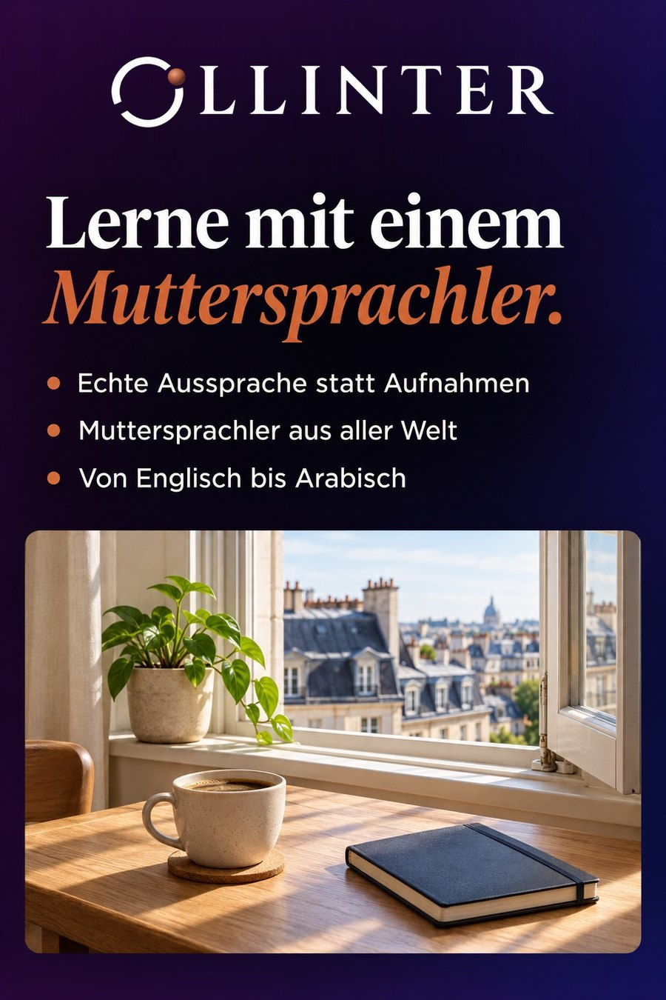
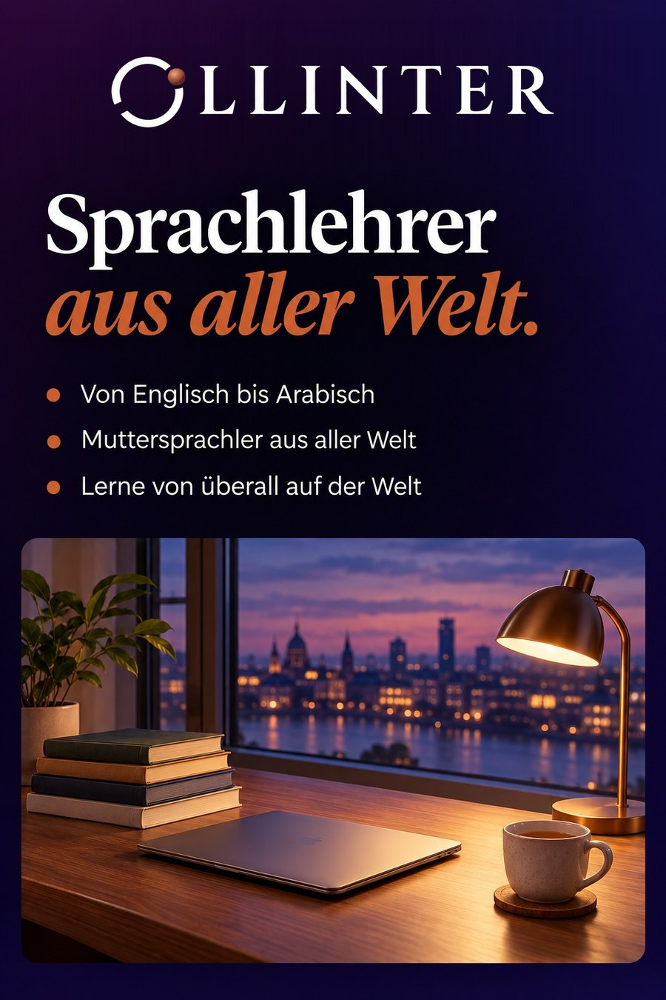
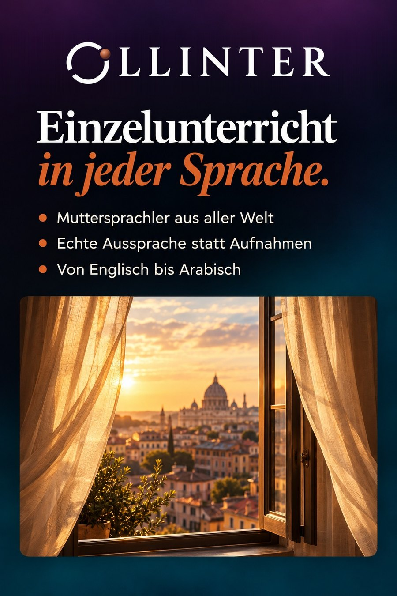
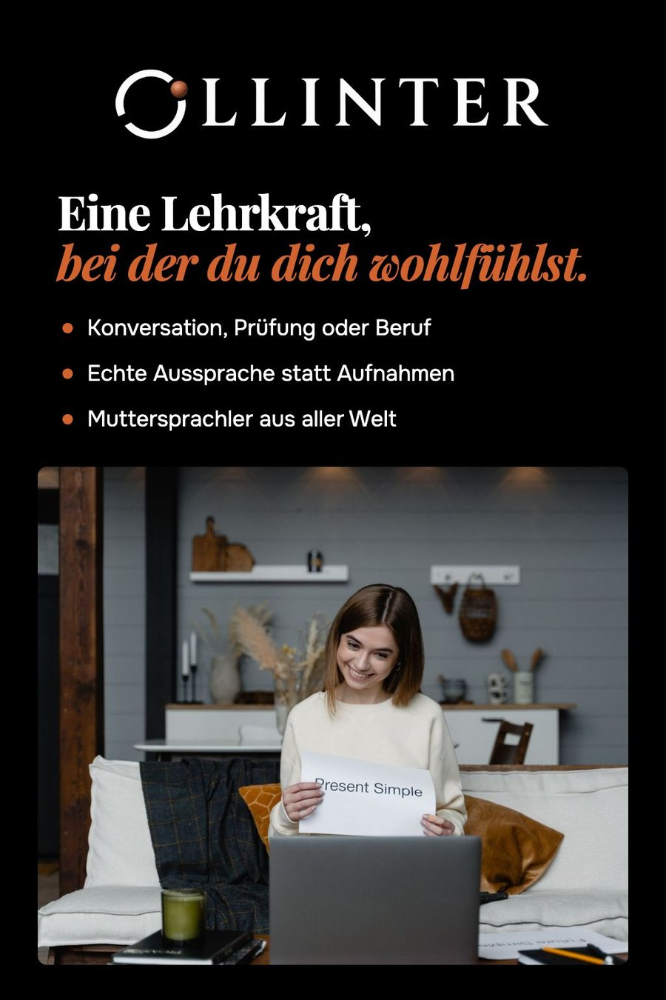

Ollinter · Германия, Австрия, Швейцария · 21 ноября 2026
Десять креативов к перезапуску
Пять макетов из первой партии и пять новых. Тексты — из утверждённого списка заголовков. Преподаватели в карточках настоящие, данные взяты с их профилей на ollinter.com.
Первая партия
Проверенные макеты. Два из них уже откручивались: Muttersprachler дал CTR 3,10 %, Aus aller Welt — 4,65 % и единственную регистрацию за кампанию.





Новые
Живые фотографии вместо сгенерированных и карточки настоящих преподавателей. Чёрный фон, крупная типографика, тот же логотип и шрифты.



Преподаватели в карточках
Christine — Deutsch, «Goethe war auch mal Anfänger – Entspannt Deutsch lernen», сегодня свободна.
Fernanda — Spanisch для взрослых, разговорный и деловой, подготовка к DELE. Сегодня с 16:00.
Lingyi — Mandarin, носитель языка. Сегодня с 15:00.
Martin Schröter — Deutsch от A1 до C2, отдельный курс для медиков, сегодня свободен.
Sara Diego — Spanisch для взрослых и детей. Сегодня с 12:00.
Фотографии, формулировки и доступность взяты с их профилей на ollinter.com и сверены 21 ноября. Цены в креативах не указаны: они меняются, а в объявлении это обещание. Флаги стран убраны — Fernanda преподаёт латиноамериканский испанский, и флаг Испании вводил бы в заблуждение.
Формат 1024 × 1536, под ленту и Stories. Исходники макетов — в папке ollinter-creatives, рендер пересобирается скриптами mkads.